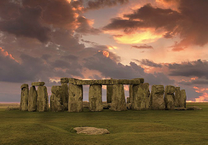

Стоунхендж может построить один человек
18 марта 2015 г.
Стоунхендж — внесённое в список Всемирного наследия каменное мегалитическое сооружение (кромлех) в графстве Уилтшир (Англия). Один из самых знаменитых археологических памятников в мире, Стоунхендж состоит из кольцевых и подковообразных сооружений, построенных из больших менгиров из долерита. Он находится в центре самого плотного комплекса памятников неолита и бронзового века в Англии. Сам памятник и его окрестности были включены в список Всемирного наследия ЮНЕСКО в 1986 г.
В видео к статье (geektimes.ru) наглядно демонстрируется, как многотонные блоки можно перемещать и поднимать на любую высоту в одиночку.